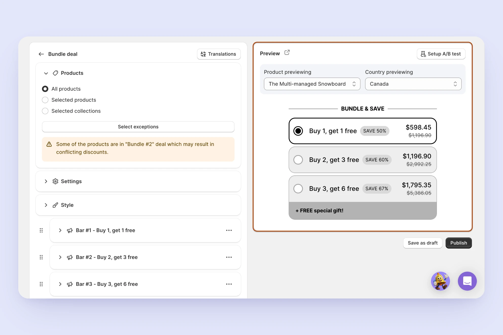
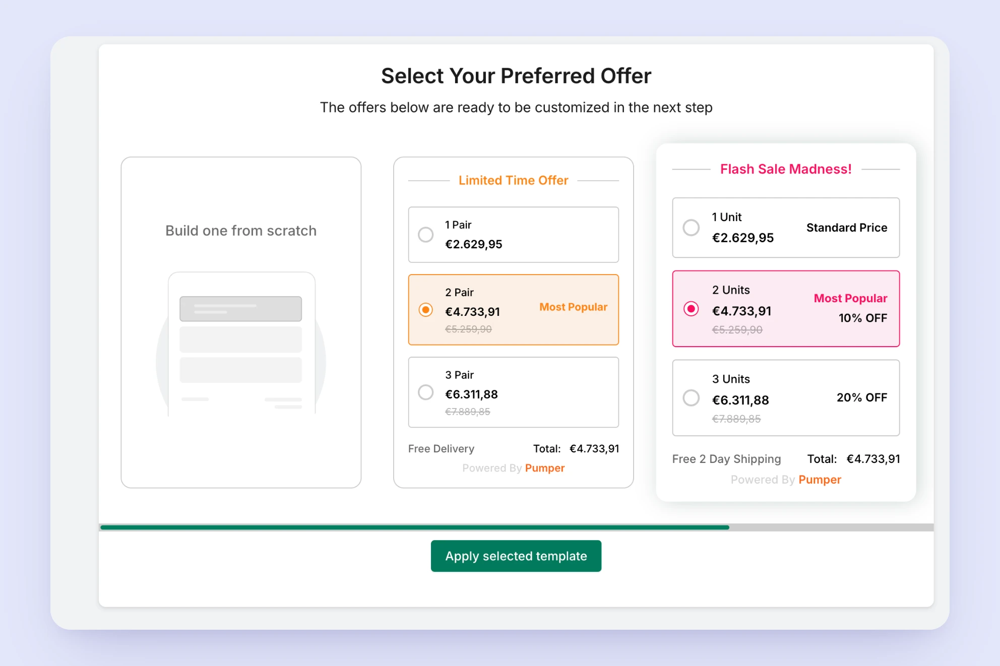
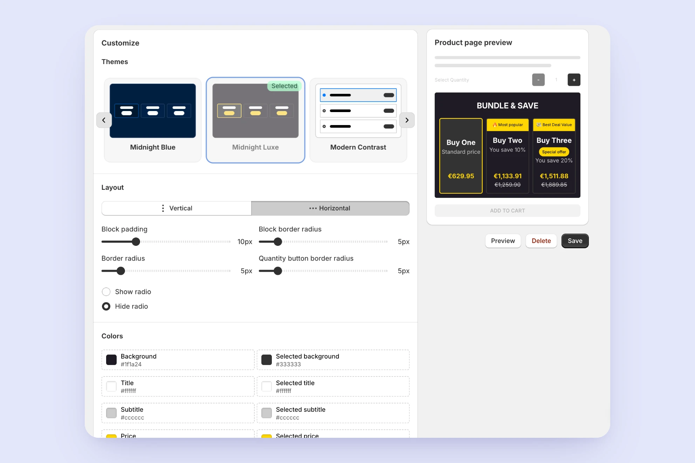
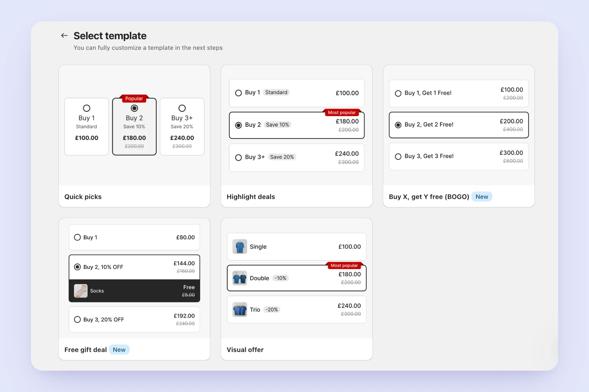
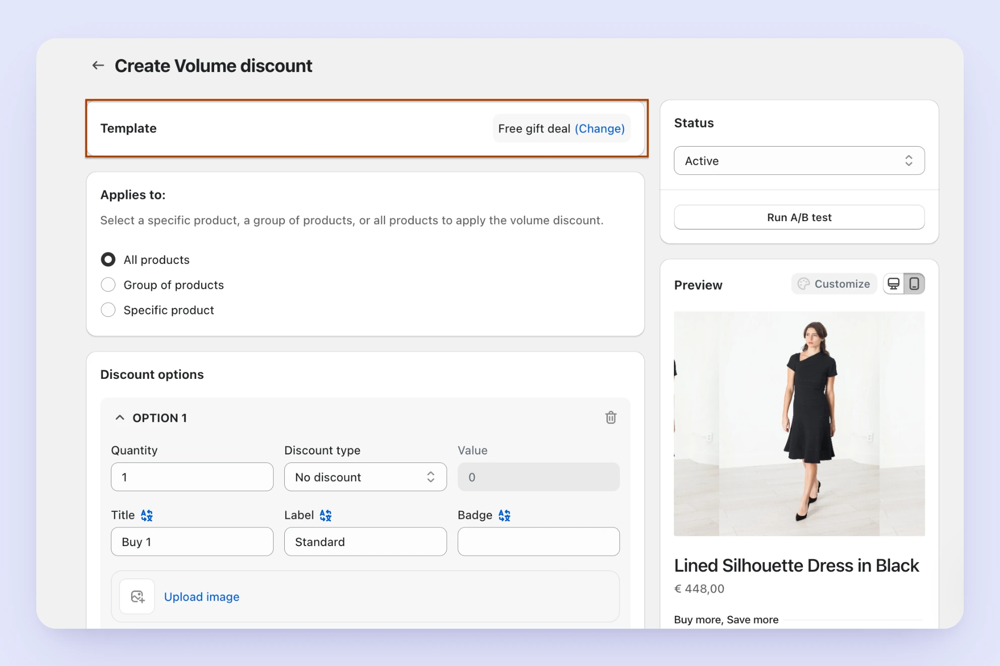
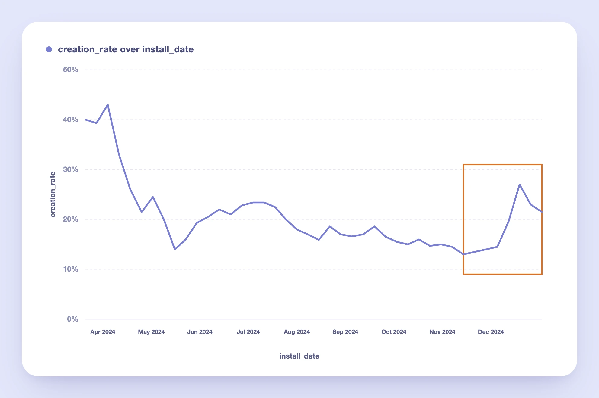

Fixing a Feature People Kept Giving Up On
A high-traffic feature in a Shopify bundling app was losing users, they'd start setting it up, then abandon it partway through. I researched why through a full audit of the user journey, screen recordings of real usage, and a look at how competitors solved the same problem. The issue wasn't just what the feature looked like. It also came down to a technical limit on how safely we could change it without breaking things for people already using it. I designed a template system that solved both sides of the problem, more than doubling completion rates and cutting trial cancellations along with it.

The app's most-used bundle type
I work on a top-ranked bundling app on the Shopify App Store, offering six bundle types to meet different merchant needs. Volume Discount — one of these six types — is designed for merchants who sell wholesale or want to encourage larger purchases: it lets them set discounts that increase with quantity (e.g., "Buy 3, save 10%; Buy 5, save 20%") on one or more products. It was consistently our most-used bundle type.
A steady decline, with no obvious cause
Starting in mid-April 2024, Volume Discount's creation rate — the percentage of merchants who installed the app and went on to create at least one Volume Discount — began a steady decline. From a peak of ~43%, it dropped to as low as ~12% by mid-November, falling behind bundle types it had previously outperformed.
No single change explained the drop, which meant the problem was systemic rather than a broken step in the flow. My job was to find out why merchants were dropping off, and whether the fix was a UX problem, a technical one, or both.

How I approached it
I led the research end to end, from framing the questions to turning findings into a design an engineering team could ship without breaking existing merchants' bundles.
- Audited the merchant journey and reviewed screen recordings of real usage
- Benchmarked competitors across comparable bundling apps
- Gathered input from customer-facing teams on recurring merchant requests
- Synthesized findings with the PM and engineers into design requirements
- Designed and validated the templating system before rollout
1. Auditing the current journey
I mapped out the entire path a merchant takes to create a Volume Discount, and found friction at nearly every step:
Getting discovered. Volume Discount ranked 13th in App Store search results for "Volume Discount," and didn't appear on the first page at all for "Quantity Breaks" — a term many merchants search for instead.
Choosing the type. On the "Select bundle type" page, Volume Discount was the only one of the three main types without a "Buy X get Y available" badge — the visual element that drew the most attention on the page. Despite this, it had a higher creation rate than the two badged types.

Volume Discount was also underrepresented further down the page: fewer use-case examples than other types, positioned lower in the list.

Creating the discount. The creation flow had three specific gaps:
- No product preview image shown while building the offer
- No option to set a discount for a range of quantities (e.g., "5–10 items")
- A custom product-selection experience — instead of Shopify's native selection modal — that made it hard to select multiple products or variants

Seeing the result. This is where I found the most important insight — a live preview only appeared after a merchant had already selected products and set a discount. Merchants couldn't see what their Volume Discount would actually look like until it was nearly done.
Storefront design. Both the horizontal and vertical widget layouts felt unfinished — inconsistent spacing, no product imagery in some states, and a generic visual style that didn't reflect the polish merchants would expect on their own storefront.

2. Watching merchants in screen recordings
I reviewed roughly 30–40 screen recordings of merchants who attempted to create a Volume Discount and didn't finish. This confirmed the "seeing the result" gap was a real, common problem, not just a hypothesis — the majority of these merchants got stuck or dropped off specifically at the preview stage. A recurring pattern emerged: merchants would go through the full creation flow, only see the actual preview after saving, realize it wasn't the discount type they wanted — and delete it. The bundle type they'd chosen didn't match the outcome they expected, and they only discovered this after the fact.
3. Benchmarking competitors
I reviewed 9 other Shopify bundling apps, prioritizing four of the highest-ranked apps in the category that were also directly relevant to the problems I'd identified in our own journey. The remaining apps followed similar patterns to these four, without introducing approaches directly relevant to the problems we'd identified.
| App | Key takeaway | Relevant to | Screenshots |
|---|---|---|---|
| Kaching Bundles | Led with the visual outcome — a template gallery of nine fully-rendered options labeled by use case, not structure. Built-in A/B testing updated a live, styled preview beside the toggle. | Abstract type presentation | |
| Pumper | Offered full variations of the same offer — different layouts (vertical/horizontal) and different visual elements enabled per variation, not just color changes. | Storefront design gaps | |
| Upsell Koala Bundles | Separated customization into theme, layout, and fine-grained tokens, with a live product-page preview beside every control — no separate save-and-check step. | Delayed preview | |
| Dealeasy | Used Shopify's native product-selection modal instead of a custom-built one. | Selection-modal friction |
Template gallery

Live preview + A/B test
Layout variations

Offer selection
Offer type gallery

Theme editor + live preview
Native product-selection modal
4. Listening to customer-facing teams
Our Customer Success and Support teams — who talk to merchants directly — surfaced recurring, specific requests: showing unit price per option, supporting quantity ranges rather than fixed thresholds, letting merchants set a unique image per discount option, and improving the widget's loading speed.
Synthesizing findings into opportunity areas
After gathering input from the journey audit, competitor research, and internal teams, I grouped the raw findings into distinct opportunity areas, incorporating feedback from the product team along the way:
- Minimal, theme-aligned storefront widgets that are easy to set up
- Visual elements (images, badges) to highlight and promote specific discount options
- Customizable price display to build customer trust (unit vs. total price)
- Fast, low-friction creation and checkout flow
- Flexible discount definitions (quantity ranges, gaps between thresholds)
- Upsell opportunities within discount offers
This synthesis made it clear that the improvements we needed weren't isolated fixes — they spanned visual design, information architecture, and the underlying flexibility of the discount logic. That's what shaped the direction of the solution: rather than patching individual screens, we needed a more fundamental structural change.
Why we started with a structural change
Two separate problems pointed toward the same solution.
The UX problem. Our competitor research showed that merchants needed to see something close to the final outcome early — not configure abstract settings first. Fixing this properly meant more than adding a badge or reordering a page; it meant giving merchants a way to start from a visual, ready-made starting point.
The technical problem. Separately, our engineering team had a long-standing, growing concern that applied across the entire app: every new feature added to any bundle type raised backward compatibility issues for merchants who had joined before that feature existed — especially those with custom code on their widgets. Without any version handling, maintaining backward compatibility got harder with every release, and the codebase became more complex and riskier to ship, regardless of which bundle type it touched.
Both problems shared a root cause: we had no structural way to introduce a new experience without breaking backward compatibility for existing merchants.
A template system — separating logic from UI, and versioning each visual/functional combination — would solve the UX problem we'd found in Volume Discount and the backward compatibility problem across the whole app, at the same time.
We chose to pilot this system on Volume Discount specifically for two reasons: it was our highest-usage bundle type, so improving it would have the biggest possible impact, and it had the simplest structure — built around a single product, rather than multiple products or collections — which made it the fastest and lowest-risk way to validate the approach before rolling it out across the other five types.
Designing the template structure
The core idea. Since backward compatibility was fundamentally a technical constraint, I brought the problem to engineering before designing a solution. Their guidance: every existing version of a bundle's design and logic had to stay untouched for merchants already using it — new features could only reach new merchants, or existing merchants who chose to migrate. This led to the core idea: separate a bundle's logic from its UI, and treat each combination as a distinct, versioned unit — so a design change creates a new version instead of overwriting the old one.
A three-layer structure. I translated that into three layers, each with a distinct reason for existing:
- Design — the layout itself, the only layer allowed to represent a major visual difference (vertical vs. horizontal), since each layout came with its own technical constraints.
- Design Variant — new, optional settings within a Design, so merchants who didn't need a new option weren't affected by it. This came directly from merchant requests for different option combinations within the same layout.
- Template — a Design Variant plus a set of default values (thresholds, option settings), letting one Variant support multiple ready-made starting points.
Design
The layout itself
Design Variant
Optional settings within a Design
Template
A Variant + default values
I considered fewer or more layers, but three matched what merchants actually needed — merchant feedback showed real, option-level needs that justified keeping Design Variant separate, while a fourth layer would have added flexibility we had no evidence merchants needed.


Creation rate recovered — and kept more trials
The new Template structure was first released to new merchants through an A/B test. I monitored the creation rate for the active (new structure) and inactive (old structure) groups separately, and once the difference became statistically significant, we rolled it out to all merchants.
After the full release, Volume Discount's creation rate rose from its low point of ~12% to 27% — more than doubling, and recovering well above where it had been before the decline started.

"The redesign didn't just fix a UX problem — it removed a technical blocker that had been limiting the feature all along."
The impact also extended beyond Volume Discount itself. Trial cancellation rate — the percentage of merchants who start a trial and cancel within that same trial period, out of all merchants who start a trial — decreased by 4%. Since Volume Discount was consistently our most-used bundle type, giving more merchants a smoother path to successfully creating one meant more of them experienced real value from the app during their trial — directly supporting a core business metric, not just a feature-level one.
Reflection & next steps
This project reinforced something I keep coming back to as a designer: the most effective fix isn't always the most visible one. The real unlock here wasn't a redesigned button or a new badge — it was a structural change that let both the UX and the underlying codebase evolve safely at the same time. Solving that gave us room to actually act on the visual and UX findings from research, instead of being constrained by backward-compatibility concerns every time we shipped something new.
We didn't roll the Template structure out to our other five bundle types right away — they had more complex structures than Volume Discount, and other priorities took precedence. We've since started applying the same approach to Mix and Match, and are currently evaluating the results.